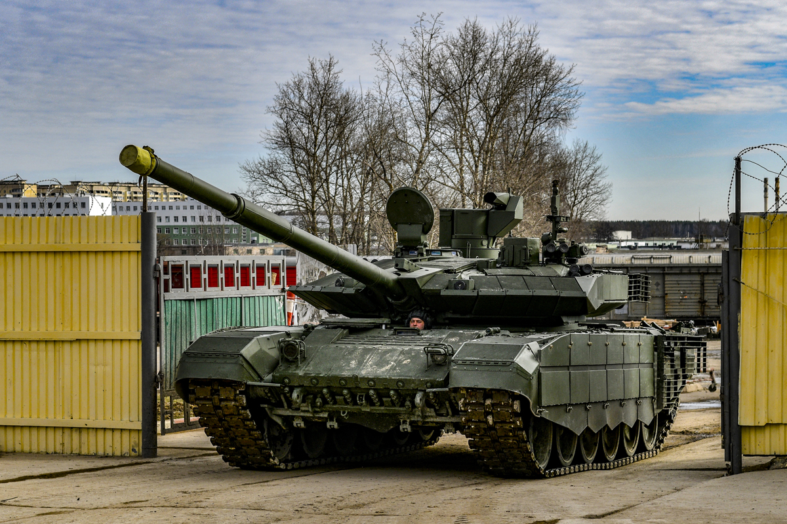
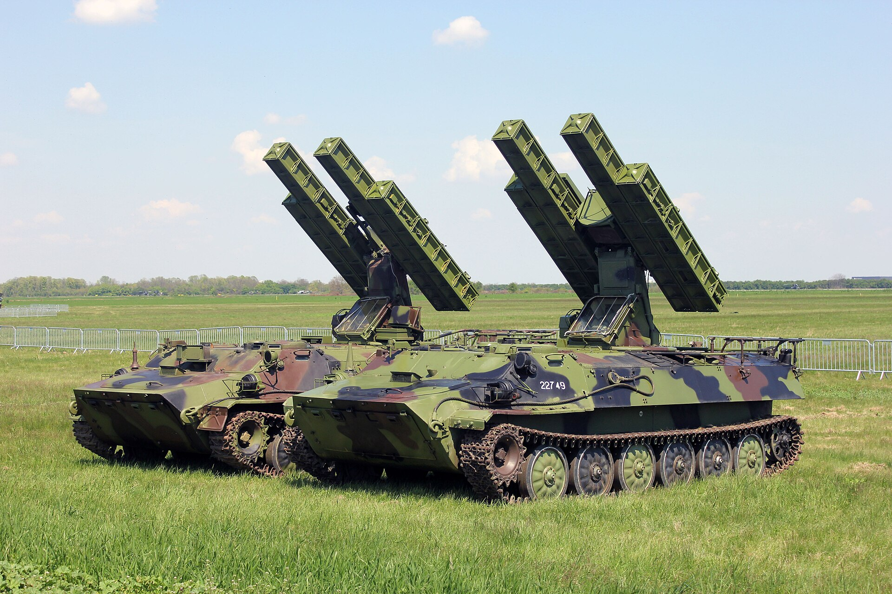
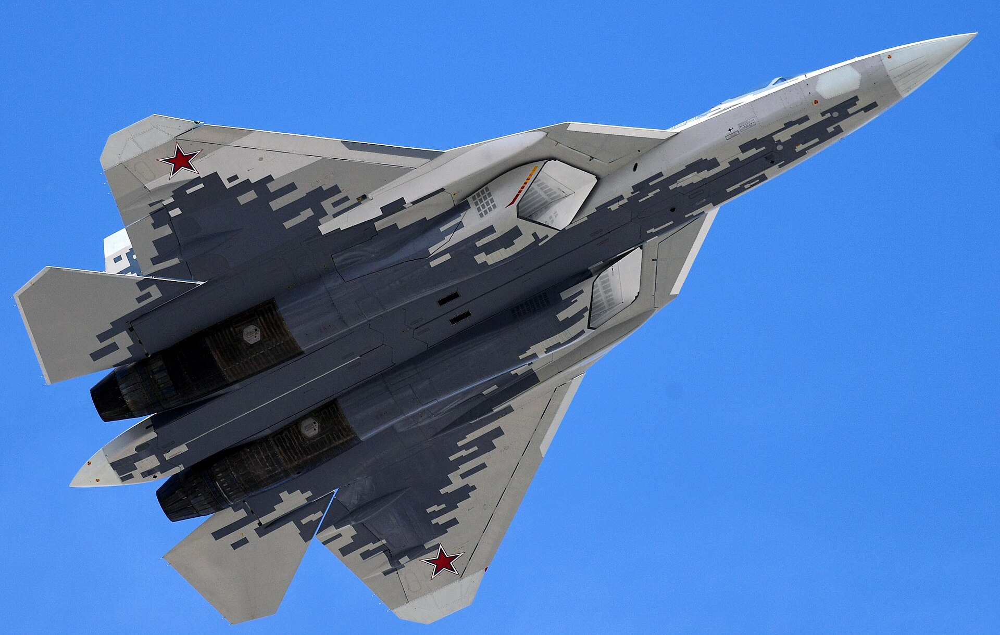

T-90M
Carro de combateQué me interesa
Del T-90M me gusta fijarme en cómo se combinan protección, movilidad y armamento. Compararlo con otros carros me ayuda a entender su evolución.
 Jorge Puente García
Jorge Puente García
He escogido cuatro vehículos que me gusta observar con calma: dos tanques, un antiaéreo y un caza. Puedes ampliar las fotos y abrir cada ficha para saber por qué me interesan.

Del T-90M me gusta fijarme en cómo se combinan protección, movilidad y armamento. Compararlo con otros carros me ayuda a entender su evolución.

El Strela-10 me llama la atención porque lleva la defensa antiaérea sobre orugas. Me interesa cómo puede moverse junto a otros vehículos.

Del Su-57 me atrae la silueta. Me gusta comparar las decisiones de diseño de un caza con las de un vehículo terrestre.

Ver este T-72 expuesto me ayuda a imaginar su tamaño real. Me gusta que el museo permita ir más allá de las cifras y conocer su historia.
Me gusta seguir estos museos porque enseñan los vehículos en su contexto, más allá de sus especificaciones.